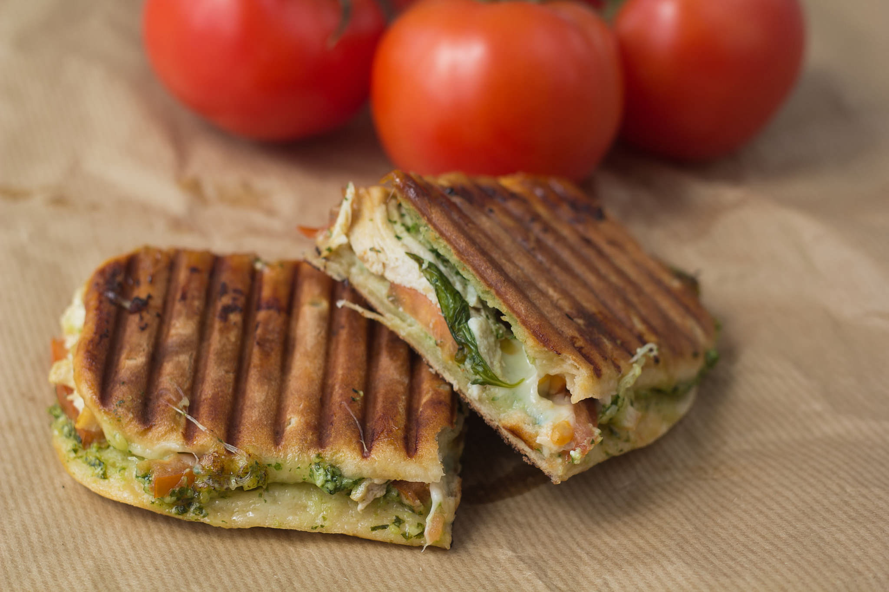

Chicken Pesto Panini

Description
A delicious mix of chicken, pesto, veggies, and cheese all melted together on flavorful focaccia bread.
Simple, fast, and very tasty - a nice change from normal sandwiches.
Ingredients
- 1 focaccia bread, quartered
- 1 cup diced cooked chicken
- ½ cup diced green bell pepper
- ¼ cup diced red onion
- 1 cup shredded Monterey Jack cheese
- ½ cup prepared basil pesto
Steps
- Preheat a panini grill.
- Slice each quarter of focaccia bread in half horizontally. Spread each half with pesto. Layer bottom
halves with equal amounts chicken, bell pepper, onion, and cheese. Top with remaining focaccia halves,
forming 4 sandwiches.
- Grill paninis 5 minutes in the preheated grill, or until focaccia bread is golden brown and cheese is
melted.
Home